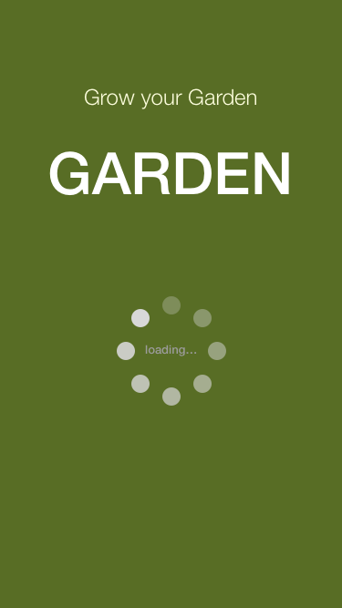
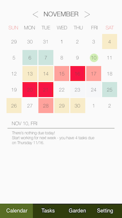
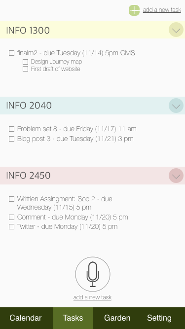
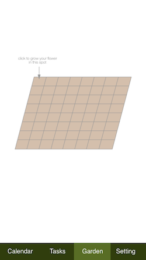
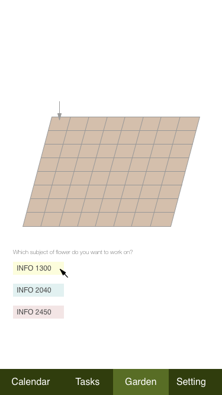
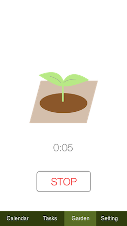
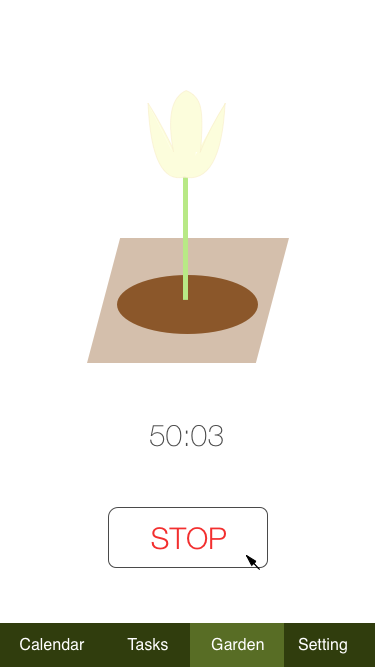
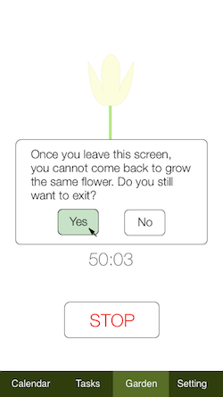
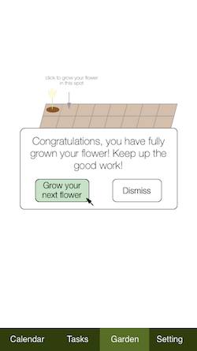
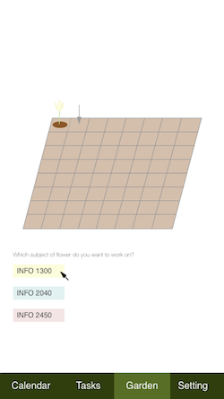

COYOS stands for Control Over Your Own Stuff. It was a team project I worked on during my sophomore year with two other students as part of SPARK Product and Industrial Design Team. College students experience high levels of stress largely due to a lack of time management skills. Effective time management skills include: goal setting, prioritization, focus, and planning. While time management skills require time and effort to learn and practice, many college students do not have the luxury to take time out of their busy schedule to set their goals, prioritize their to-do list and plan ahead.
to reduce the high stress level of the students by helping the students manage their time.
In order to do so, our team came up with three sub-goals:
1. Provide an easy way to manage the schedule
2. Make it easy to focus and get the work done
3. Motivate students to continue using the tool
The target audience is college students. Since tailoring the development was the easiest for students in Cornell University, the interviews and user testing are focused on this specific segment of the target audience.
In order to approach this problem, our team first defined the problem space.
Our initial user interview was focused on getting to know more about the users and what they are looking for in time managements.
Our findings in this stage include:
1. One user writes down things to do each moment he thinks of a task on Evernote tab,
and delete it after completing each task in order to manage his task.
2. However, the user has difficulty retrieving the notes because the deleted notes are hard to recover.
Thus, it is hard to keep track of the achievements.
3. Many users have replied that the process of data input should not be time consuming.
Apps that require effort to input all the assignments and exams would not be preferred,
as it outweighs the benefits regarding efficiency and time management.
4. Users prefer the schedules to be already installed within their systems, as much as possible.
Based on these findings, we have concluded that:
1. In order to solve time management problems where students are expected to balance academics, social life,
extracurricular activities and their physical and mental health,
we should develop an effective model of scheduling app that would work long-term.
2. This trouble with time management stems from the fact that students either
do not know how to time manage or do not have the time and resource to do so.
Therefore, the app should be designed in a way that maximized support is given to those who are looking for efficient ways to manage their tasks.
Some of the potential goals therefore include maximizing built in templates and schedules that the users can use to further customize.
Our team wanted to provide the user a product that is portable and convenient to use. The one thing that every college students never let go is the cell phone. Thus, we decided to design an app that would help students to manage their schedule anywhere at any time. However, while an app would solve the problem of portability, still remains the problem of convenience. In terms of designing an app, we have to consider the fact that it should be easy to add content into the schedule without having to type too much and the buttons and dates should be sufficiently big enough for reading and clicking. Also, since it is harder to open multiple tabs in a mobile app than in a desktop, we have to present the app so that the list of things to do, the calendar, and other features could be captured in one sight. The constraints also include physical location and settings, as we are trying to make an app that is specific to Cornell University students in this stage.
While some students already have developed their way of time management and are satisfied with the apps that are on the market, there also are the majority of the students who are not familiar with time management due to a lack of an efficient scheduling app that (1) is easy to use for inputting new information (2) helps focusing on the task and (3) motivates the users to continue using the app. Thus, our team intends to develop a scheduling app for those who do not have access to a stress-management scheduling tool that is suited for their current academic pursuit, where the managing tool is directed so that it is more designed around the specific needs of the college students.
When we were defining our problem statement, we realized that we need to narrow down
the scope of “stress” management instead of talking about “stress” in general terms.
Therefore, we decided to focus on time management with our target audience being Cornell students.
We also decided to base our user interviews to have a clearly written out problem statement, and determine the How might we questions.
We have defined our How might we questions as the following:
1. How might we design our app in order to make it easy to manage the user’s schedule?
2. How might we reduce distraction and make sure the users concentrate on getting the work done?
3. How might we convince the users to continue using the app?
Using these how might we questions, we looked for sources of inspiration to solve our problems.
Some of the scheduling apps that we looked into were Google Calendar, Windows Outlook, and Sunrise.
The important features that were built into the applications include the following:
• The ability to integrate content across apps
• Mobile and web usability
• Shareable schedules
• Multiple calendars
• To-Do lists
• Notifications that can be turned on and off
The above characteristics that we defined allowed us to build our app to be feasible in the market. In order to identify the competitive edge in our app, we decided to include additional features that would be customized for college students.
In our user interviews, we found that the most important aspect of a scheduler app for college students is that it should be quick and easy to use. This idea is the core of our design. The reward system is to be added so that an effective model that would monitor effective time management and validation of reward system as compensation was incorporated. Based on this system, the gamification process was based directly on hours one would spend on a task, an easy indication that would predict the academic progress/outcomes. Since it is impossible to monitor this to a great extent without privacy and security problems, the best way was to measure and eliminate the amount of distraction while users are doing work. The idea is that when the user stays focused on work, The garden will continuously grow until the user exits the app and decides to use their phone.
There are additional features that we considered to incorporate into our app. Through our extensive user interviews and additional research, we concluded that some of the features that could distinguish our apps from other apps would be regular notification and task management through statistical analysis. As of now, these features have not yet been prototyped. Since the app is specific to Cornell students for now, we thought that compilation of data of how much time classmates spend to study for a specific course, how much time different categories of students spend on this course would motivate the students to study more. For instance, if the statistics is clearly shown for A-range students, B-range students, on how much time they spend to study, students will have an idea of how they should distribute their time to effectively and sufficiently get ready for the exam.
Our app will have several tabs at the top to sort through its different functions. One tab will be the “Calendar” tab. Since a user commented that more enough color options should be given for them to easily prioritize their schedule, we decided to make our schedule have many color coding options, along with day, week, and month views. We decided to use a monochromatic color scheme for weekly and monthly schedules to add coherence and visibility of tasks. On the other hand, we decided to use complementary color schemes for different classes, as the differences between the classes need to be recognized with a clear distinction within human brain. These changes had brought an improvement compared to those of other apps, which display limited colors. Our decision to come up with different color options for each class, so that users gain a better visual interpretation of each class lectures and assignment due dates, was supported with our user interviews that happened after the screenshots were used to run through an alpha testing of different scenarios.
One problem associated with ease of use was discovered through a series of user interviews. The interviewees stated that adding schedules and a list of things to do tend to get tedious, and hard to keep up with. Because of this, we decided that our app needs to have a quick and convenient way to add events. During our team ideation session, the idea to allow the ability to take a picture of a class syllabus and have the app interpret it and make a schedule. This feature would be very helpful, but there were concerns that it would be too difficult to make and maybe not feasible. Another idea we discussed was logging in with your Net ID, so that the app would have access to your enrolled classes. There will be a tab on the app with folders for each class containing schedules shared by your professors, TAs, and students in your classes that you can subscribe to. Using these shareable schedules, it will be very quick and easy to add the schedules for all your classes at the beginning of the semester. If the schedule is changed, the creator of the schedule can edit it and everyone who is subscribed gets the updated schedule. However, this also has the issue of getting approval from the Cornell University administration and etc. Thus, we decided to incorporate the voice recognition feature, which would allow the user to just read the assignment, which is quicker and easier than having to type every word.
The biggest concern for most students was procrastination. We had an ideation session exploring the possibilities for reducing procrastination and came to conclude that providing incentive based reward system would allow for students to stay more focused on their tasks in a timely manner. The rewards would be earned for completing tasks on our schedule and possibly for sharing schedules you make for your classes for other people to use. They would go towards something like decorating and expanding your virtual “house,” or growing a virtual plant. For the house, for example, we could make the reward be virtual coins that could be used to buy your house new paint and wallpaper, cars, and furniture, and also have the option to upgrade your house at certain milestones. After considering all these alternatives, our team decided to proceed with the idea of growing a garden. (This idea was inspired by the app “Forest.”) To decorate the garden, the user can grow a flower at a time by selecting a plot of the soil and work on the task for at least 50 minutes. While we originally wanted to give our users monetary reward, we decided to change our business model because (1) it is not financially feasible and (2) there is no way to check if the users have actually completed the task. As an alternative, we decided to go with a less expensive method that of growing a virtual garden.
We incorporated the features that have been suggested by the previous user interviews and those we got inspired by the app “Forest” from iOS app store into our prototype. The purpose of the prototype was to execute user testing more effectively with the screenshots instead of verbal description of the app. While there is a limit to using screenshots, for these cannot fully capture all of the app’s features, given the time constraint and limited ability to develop an actual app, our team decided to proceed with using the screenshots.
 Figure 1  Figure 2 Figure 1 is the loading page that the user sees upon entering the app. Then, it proceeds to Figure 2, which is the main home page - the Calendar view of the general schedule. The calendar used a monochromatic color scheme to demonstrate the amount of assignments due that day. The brightest red (pale pink) color means that there are more than 3 tasks due on the day; the lighter shade of pink represents that there are 3 tasks due on the day; yellow means there is 2 tasks due on the day; and finally, the light blue means there is 1 task due that day. The green dot shows the current day and below the calendar gives a brief description of the day. Because there is no task due on November 10th, it says “There’s nothing due today!”. If there was something due on the day, it will tell the user what is due and encourage him/her to get started on it.
 Figure 3 Based on the user interviews, our team decided to incorporate the voice recognition feature into our app so it is easier to put down the tasks; the user can just tab on the mic, as can be found in the Figure 3, and just say the new assignment. For instance, if the user just found out that there will be a pop quiz on Monday, he/she can say “Quiz in INFO 2450 on Monday November 13th”. Then, the app processes what it captures and puts a new task in for the user. This will encourage the user to continue use the scheduling app more at ease, since it usually gets tedious to put in a new assignment each time there is a change.
 Figure 4  Figure 5  Figure 6  Figure 7  Figure 8 Once the user checks the overview of the schedule and takes a look at all the tasks to complete, he/she can proceed to the “Garden” tab. Then, as can be see in the Figure 4, the user gets asked to pick a plot of the garden. Inspired by the “Forest” app, our team decided to incorporate the reward system so the users are motivated to work on the tasks. When the user decides where to plant their flower on the garden, the user can tab on the specific location. Then, the user will see the next screen, as in the Figure 5. On this screen, the user gets to select which class to work on. In this example, the user sees the options of: INFO 1300, INFO 2040, and INFO 2450.
After selecting the class to work on, the user is now on the stage of working and growing the flower. Once the user gets to the screen that is featured in the Figure 6, the user cannot just quit the app (refer to Figure 7 and 8); this is to prevent the user from getting distracted by other social media and mobile games. Based on the research and our user interviews, the cell phone usage is the number one distraction from studying or getting any work done. Thus, in order to reduce distraction (we realize that the users could just open their laptop to go on social media), this app stops the user from quitting the app, unless he/she stops growing the plant. If the user clicks the button “STOP,” the user encounters a pop-up that warns “Once [the user] leaves this screen, [he/she] cannot come back to grow the same flower.” This asks whether the user is sure to quit the app. This feature of growing a flower combined with the warning message was intended to discourage the user from quitting the app. This is based on the assumption that the users will get their work done if (1) they are not on social media or any other distractive apps on their cell phone (2) they are rewarded with the act of growing a flower in the virtual world and (3) their flower would not be fully grown and shown on their garden unless they work for more than 50 minutes.
 Figure 9  Figure 10When the user grows a flower to the fullest extent, the user will receive a message from the app, as can be seen in the Figure 10. This message serves two purposes: (1) rewards the user for working hard and growing their flower and (2) encourages the user to work more on a different class. If the user clicks the “Dismiss” button, the user will be returned to the original “Gardens” tab, now with the flower that the user has grown, as can be seen in the Figure 9. Then, the user returns to the main screen (Figure 10).
What we learned from this user testing:
The user enjoyed the experience but was more interested in the technical parts of the design. Therefore, I learned that the user testing should not only be prepared with the product, but also be prepared with extensive technical background and explanation.
The key changes that would be made to the app would be incorporating a solid system for measuring the amount of work that individuals achieve, which involves measurement other than time and phone usage, as sources of distraction would not only come from the usage of the phone. Therefore, the change in the assessment of work done would incorporate the evaluation of the efficiency at which you have worked.
Our design was initially prototyped based on research on Cornell students, different time management apps, and research on stress and the possible biological phenomena that occur as a result. Our proposed solution and prototype was then modified significantly through a series of user interviews.
Some of the most significant results found through this process include the fact that the users were able to record their tasks with less time and with diversified features. Moreover, the user interviews have indicated that incentivizing would work as an effective tool to motivate users to work harder. Subscription system to the schedules also increase the ease at which the students can achieve work and be aware of all the tasks they have, as students who do not have a habit of taking notes down tend to forget their assignments. Also, the results have indicated that the application was well-tailored towards Cornell University students, as the sign-ins were through Net ID and tasks that were highly relevant to the work that students would be doing every day. The results listed above will act as the cutting edge to the scheduling app that we have developed.
Some of the improvements that the users have suggested was that although the scheduling app is highly applicable to college students, it does not apply as much to people who work. Moreover, the app does not give a solid measure of the efficiency of work, as the indicators to measure work is the duration.
Therefore, future direction of research would be making a different version of the app for other members of the community. Moreover, we are looking to make the app so that individuals are able to get a solid sense of how much they are working. This involves measurement other than time and phone usage, which are the two indications we are using to incentivize and measure achievements. The sources of distraction would not only come from the usage of the phone, and the change in the assessment of work done would incorporate the evaluation of the efficiency at which the users have worked.